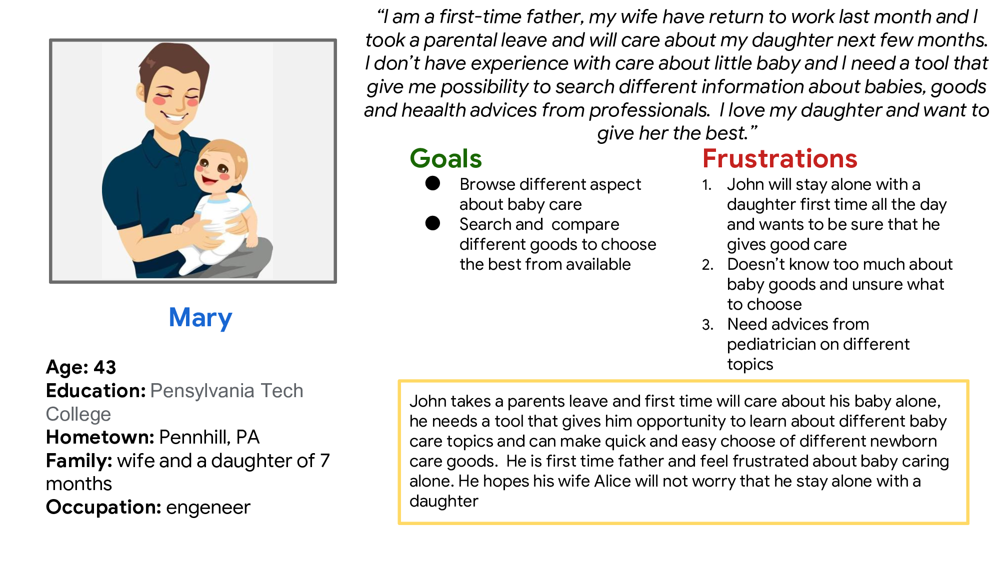
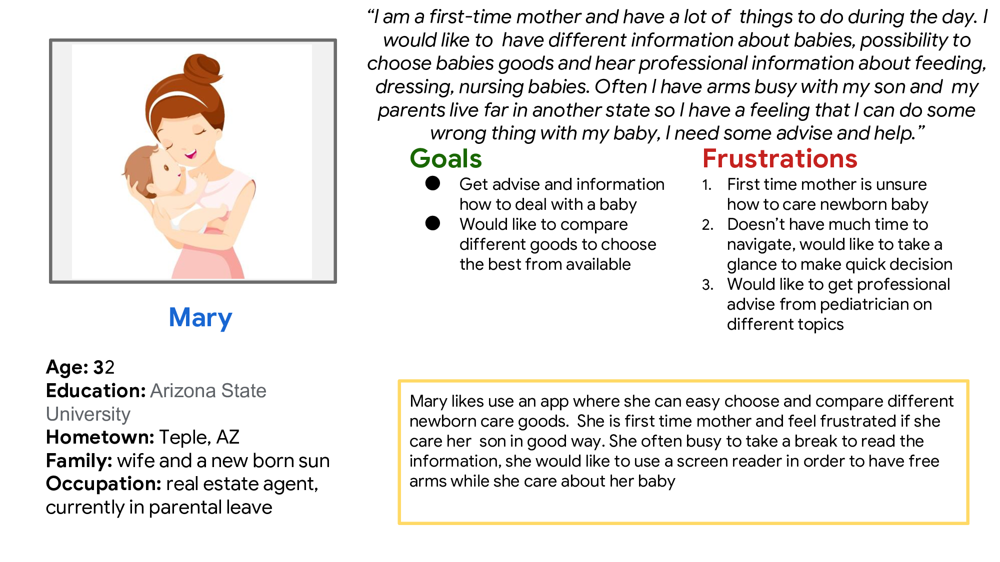
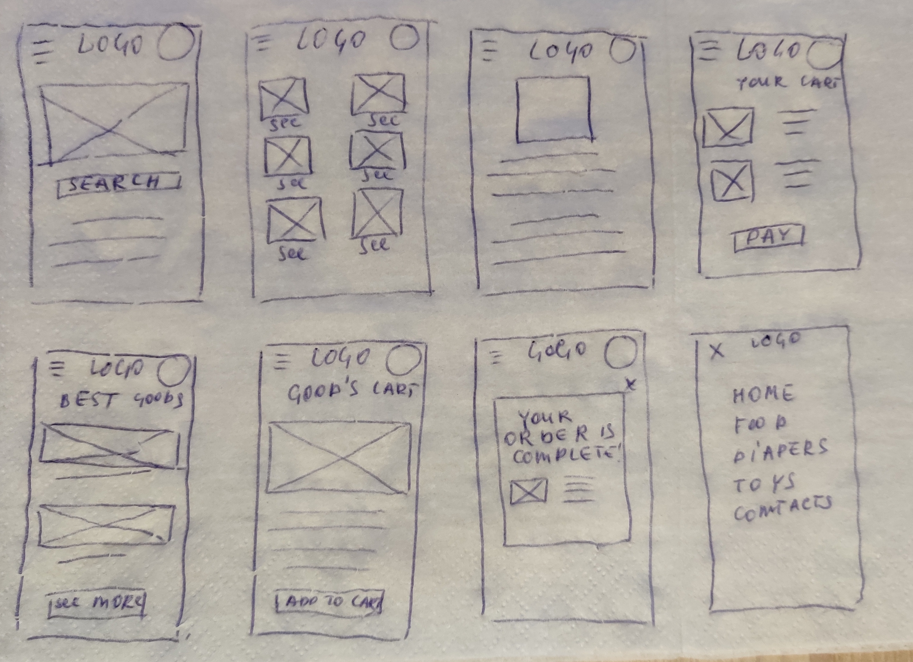
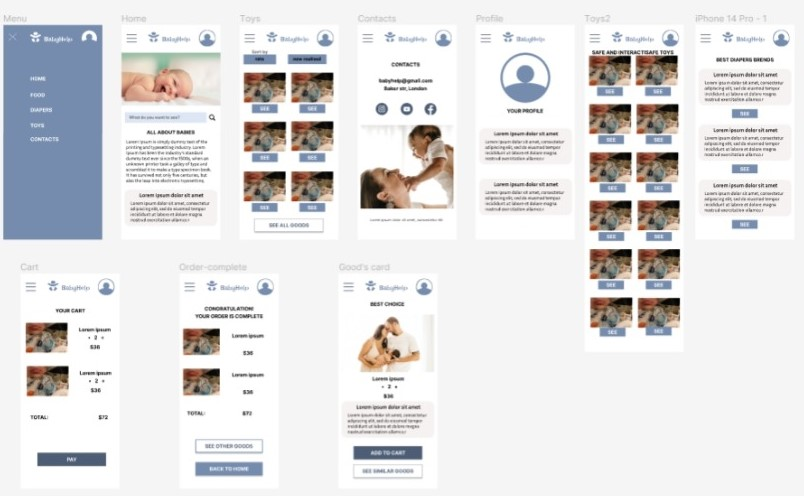
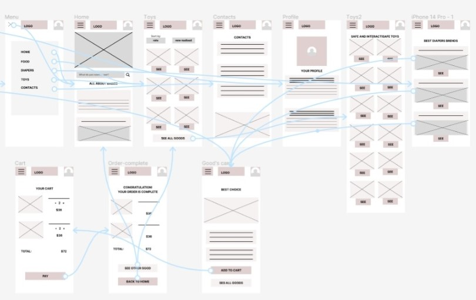
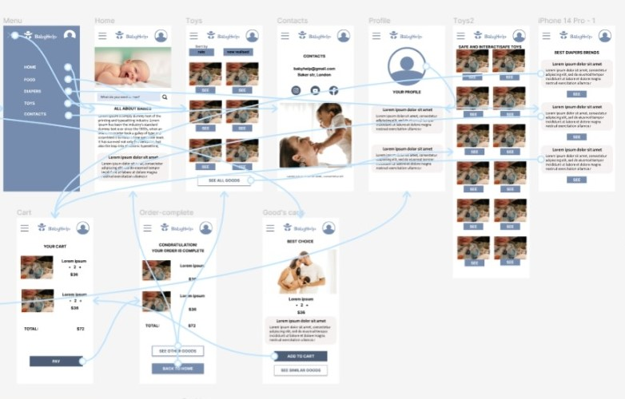

Design app to help people learn about being a first-time parent
The goal
The app helps unexpert parents to choose new born babies good and helps with opinion from professional pediatrician and advices from other parents.
My role
UX designer leading the app design from conception to delivery.
Responsibilities
Conducting interviews, paper and digital wireframing, low and high fidelity prototyping, conducting usability studies, accounting for accessibility, iterating on designs, determining information architechture and responsive design.
User research summary
I conducted interviews and created empathy maps to understand the users I’m designing for and their needs. A primary user group identified through research was people of age over 18 years old who have new born babies, especially first-time parents, this user group is overwhelmed with different duties that have to commit with little children and have little time to browse in internet.
The secondary user group are people who have adult children first time parents. The user group confirmed initial assumption about first time parents and also revealed that some part of users is not familiar with technology, have problems with choosing available goods.
Personas
 Ideation
I did quick first ideation process to come up with ideas for how to adress gaps identified in the competitive audit. My focus was in simplicity searching and ordering goods
Digital wireframes
After ideating and paper wireframe process I created the initial designs for the app for first time parents. The design focused on easy access to different parts of the app
Low fidelity prototype
To prepare for usability study I created a low fedelity prototype that connected the user flow of viewing goods.
Usability study
Parameters:
- Study type: unmoderated usability study
- Participants: 7
- Location: USA, remotes
- Length: 30-60 minutes
The main findings uncovered by usability study:
- People want easy searching themes of interest.
- People had difficulty choosing and adding to cart desirable good.
- People need indication how to complete o modificate order.
Mockups
Based on the insights from the usability study, I applied design changes like providing a clear section of searching desirable themes in searching input
High fidelity prototype
The high-fidelity ptototype followed the same user flow as the low –fidelity prototype, including design changes made after usability study
Responsive designs
Design of screen size variation includes mobile, tablet and desktop. I optimized the designs to fit specific user’s need of each device and each screen size
Takeaways:
Impact
Users appreciated the app that is a useful tool to search, compare and order newborn baby good that also includes advises from prfessionla pediatrician and experience of other parents.
What I learned
I learned that even through the problem I was trying to solve was a big one, but diligentl follow each step of the design process and aligning with specific user needs helped me come up with solutions that were both feasible and useful.
Next steps
- Conduct research on how succesful the app is in reaching the goal to be useful tool for first time parents.
- Add more resourses and engage more professionals to gather more advices and opinions on app’s topics.
- Provide a discount system for user who used the app regulary.